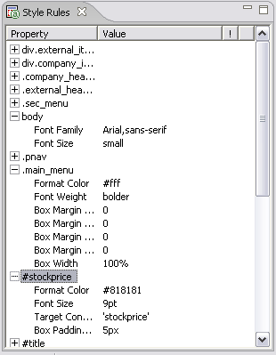

The Style Rules view provides an alternative way to view all the rules for a particular theme variant. It contains a table that displays the style rules, organised by selector sequence, showing:

You can change the width of columns, select rows and scroll the list in both directions. When you select a row in the view, the Theme editor selection moves to the Design page and the related selector. If you have selected a property, the property is expanded and the property control in that section is selected.
You can cut, copy, paste and delete both entire rules and individual properties elsewhere in this variant, or to another variant in this or any other theme. However, you must use the Design page to create or modify rules in any other way.
Related topics
Themes
Style rules
MCS views